phoebe 派案追蹤 管理者操作手冊
開始之前
這本手冊給管理者使用，負責建立派案、審核老師的改時間申請、改派，以及整理異動通報資料。電腦和手機都能操作，建議用電腦，畫面比較寬，一次看得到比較多派案。
- 網址：https://phoebe168.github.io/phoebe-dispatch/
- 帳號：你的手機號碼
- PIN：4 碼數字
管理者每次打開網頁都要輸入 PIN，手機號碼會自動記住。老師只有第一次需要登入。
天數規則（老師與管理者共通）
- 派案當天算第 0 天，假日照算。
- 第 1～7 天：正常。
- 第 8～15 天：老師必須選擇原因，這筆會列入「異動通報」。
- 超過第 15 天：老師沒有日期可選，只能回報「無法服務」。
- 改派之後，天數仍從原派案日起算。
第一部分 快速指引
| 功能 | 步驟 |
|---|---|
| 登入 | 開啟網址 → 輸入 PIN → 登入 |
| 建立派案 | 建立派案 → 填個案編號、姓名 → 選服務項目、區域、派案日期、老師 → 建立派案 |
| 查看進度 | 派案 → 點分類（待回覆、待服務、異動待審…） |
| 搜尋個案 | 派案 → 全部 → 搜尋框輸入姓名、編號或老師 |
| 核准改時間 | 異動待審 → 核准 → 確定 |
| 駁回改時間 | 異動待審 → 駁回 → 填原因 → 確定 |
| 改派 | 待改派 → 改派 → 選老師 → 確定改派 |
| 代為回報完成 | 逾期未回報 → 代為回報完成 → 確定 |
| 修改派案 | 派案卡片 → 修改 → 改資料 → 儲存 |
| 取消派案 | 派案卡片 → 取消派案 → 填原因 → 確定 |
| 異動通報 | 異動通報 → 複製通報資料 → 到照管系統通報 → 勾「已完成異動通報」 |
| 新增帳號 | 帳號 → 填姓名、手機、角色 → 新增並產生 PIN → 私下告知本人 |
| 修改或停用帳號 | 帳號 → 修改 → 改資料或取消勾選「啟用」 → 儲存 |
| 重設 PIN | 帳號 → 重設 PIN → 確定 → 私下告知新 PIN |
| 維護下拉選項 | 選項 → 一行一個 → 儲存 |
| 登出 | 右上角登出 → 確定 |
第二部分 完整說明
圖中的紅框是要按的地方，左上角的綠色數字是操作順序。圖中的個案與老師都是示範資料。
1. 登入
- 打開網址，手機號碼會自動帶入（第一次要自己輸入）。
- 輸入 4 碼 PIN。
- 按「登入」。
關掉瀏覽器分頁後，下次打開要再輸入一次 PIN，這是為了保護管理者權限。PIN 連續錯 5 次會鎖定 15 分鐘。
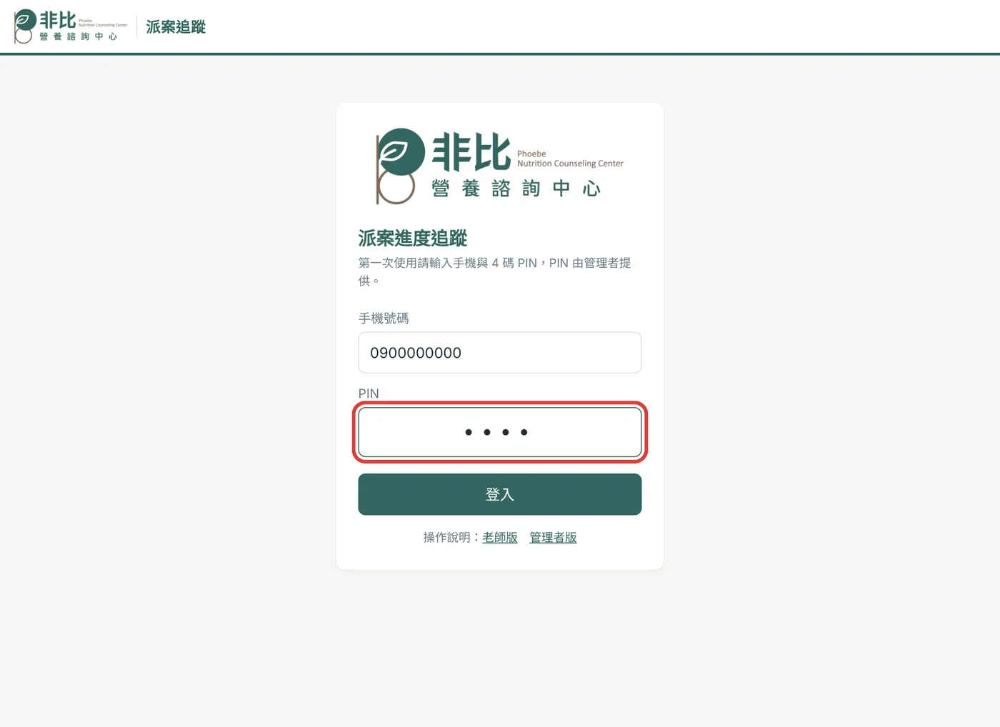
2. 畫面總覽
登入後上方有四個功能：派案、建立派案、帳號、選項。「派案」下面有八個分類，紅色數字代表還有幾筆待處理。
| 分類 | 內容 | 你要做什麼 |
|---|---|---|
| 待回覆 | 老師還沒回覆第一次服務日 | 橘框是已過 7 天，紅框是已過 15 天，請聯絡老師 |
| 待服務 | 老師已回覆日期，等待第一次服務 | 不用處理 |
| 異動待審 | 老師申請改時間 | 核准或駁回 |
| 待改派 | 老師回報無法服務 | 改派給其他老師 |
| 逾期未回報 | 服務日已過，老師還沒按完成 | 聯絡老師確認，必要時代為回報完成 |
| 異動通報 | 首次服務落在第 8～15 天 | 到照管系統通報，完成後打勾 |
| 已完成 | 已完成第一次服務 | 不用處理 |
| 全部 | 所有派案，包含已取消 | 用來搜尋 |
卡片左邊的顏色：橘色是需要留意（超過 7 天），紅色是需要馬上處理，綠色是正常或已完成。
每次操作後，右上角會出現「儲存中…」，變成「已儲存」就代表資料存好了。存好之前請不要關閉網頁。
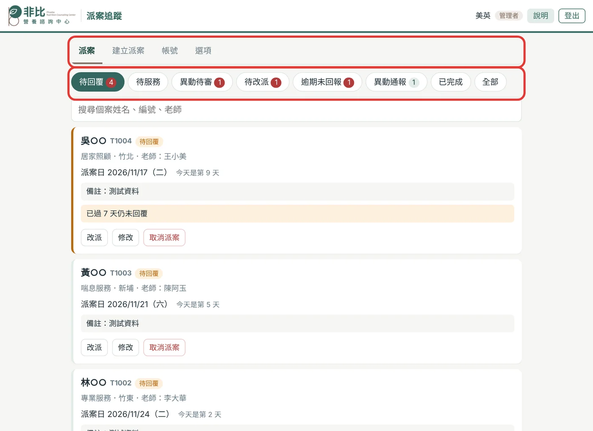
3. 建立派案
- 點上方「建立派案」。
- 填個案編號、個案姓名。
- 從下拉選單選服務項目、區域。
- 確認派案日期，預設是今天。照管中心前幾天派的案子，要改成實際派案的那一天，天數從這個日期開始算。
- 選指派老師，需要的話填備註。
- 按「建立派案」，這筆會出現在「待回覆」，老師也馬上看得到。
個案姓名、服務項目、派案日期、老師是必填。派案日期不能選未來的日子。
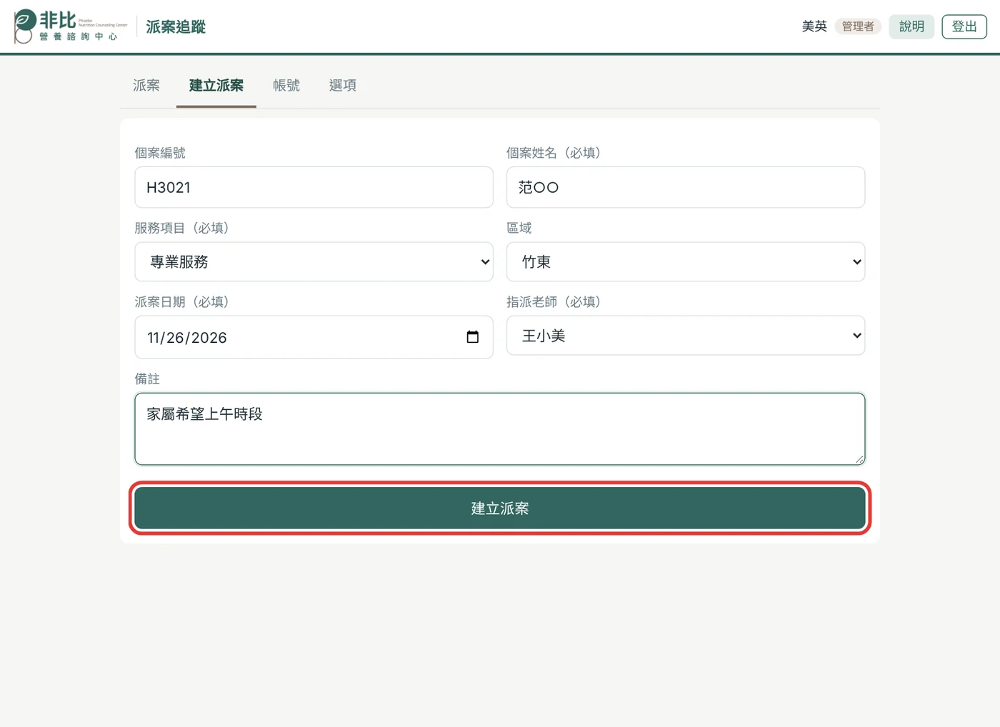
4. 審核改時間申請
老師申請改時間後，會出現在「異動待審」。卡片上會顯示原日期、新日期、各是第幾天，以及老師寫的原因。
- 核准：按「核准」→「確定」。首次服務日馬上改成新日期。新日期超過第 7 天的話，這筆會自動進入「異動通報」。
- 駁回：按「駁回」→ 填原因 →「確定」。原日期不變，老師會在自己的畫面看到駁回原因。
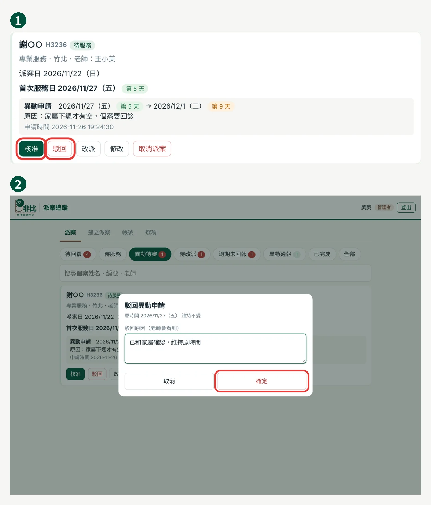
5. 改派
老師回報「無法服務」後，這筆會出現在「待改派」，卡片上有老師寫的原因。待回覆、待服務的派案也可以直接改派。
- 在卡片上按「改派」。
- 選新的老師。
- 按「確定改派」。
改派後，這筆回到「待回覆」，由新老師重新回覆日期。派案日不變，天數照原派案日計算，原老師就看不到這筆了。
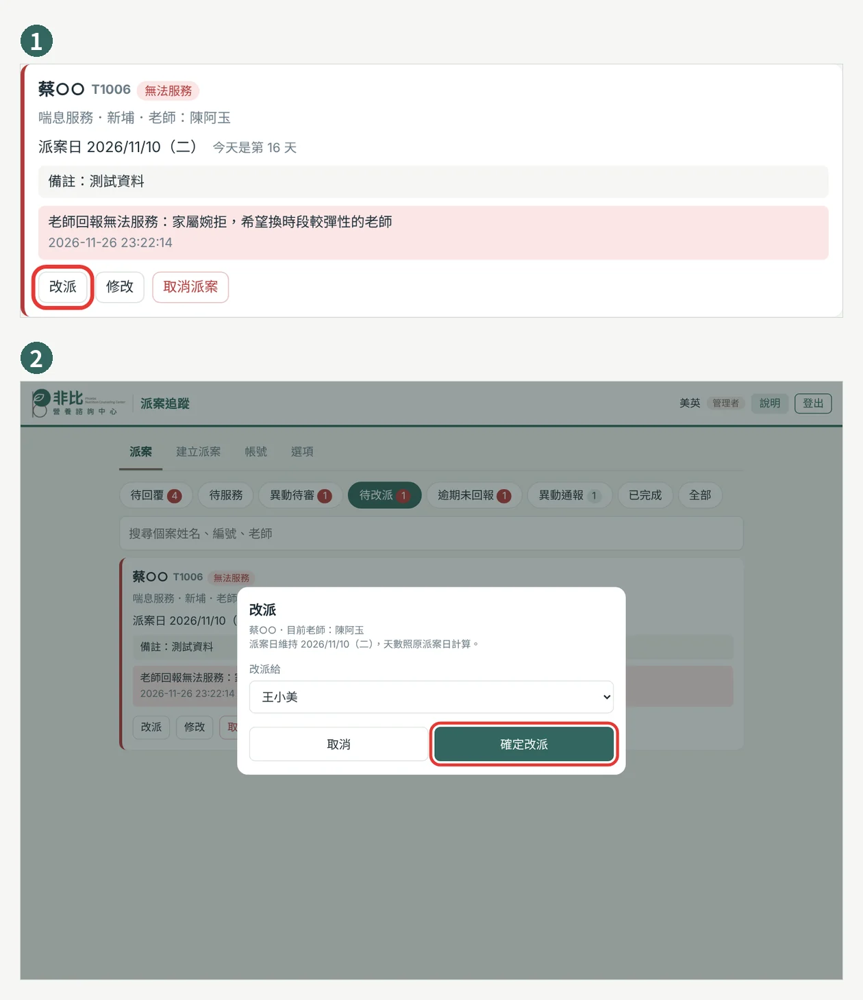
6. 逾期與未回覆的提醒
- 逾期未回報（紅框）：服務日已過，老師還沒按完成。先聯絡老師，確認已經服務的話，按「代為回報完成」→「確定」。如果實際上沒去服務，請老師申請改時間，或由你改派。
- 待回覆超過 7 天（橘框）：卡片會出現「已過 7 天仍未回覆」。超過 15 天會變紅框，老師已經沒有日期可選，請盡快處理。
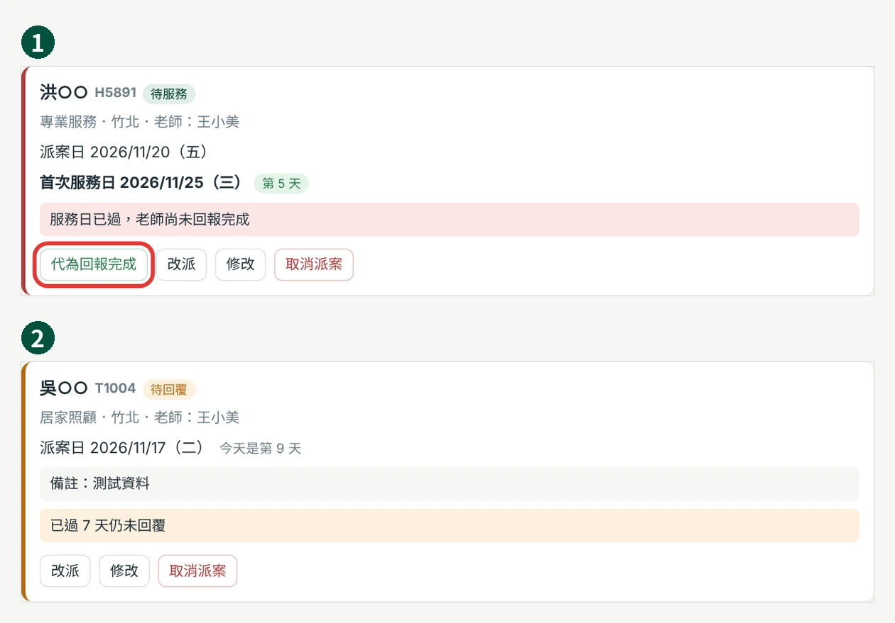
7. 修改與取消派案
修改：按卡片上的「修改」，改個案編號、姓名、服務項目、區域或備註，再按「儲存」。派案日期只有在「待回覆」時能改，老師回覆後就鎖住了。要換老師請用「改派」。
取消：照管中心撤回或個案不需要服務時使用。按「取消派案」→ 填原因 →「確定」。取消後老師就看不到這筆，只會出現在「全部」。已完成的派案不能取消。
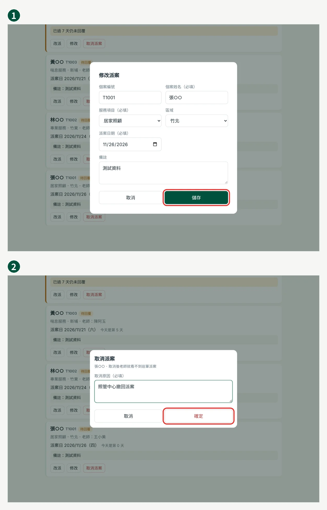
8. 異動通報
首次服務落在第 8～15 天的派案，會自動出現在「異動通報」。紅色數字是還沒通報的筆數，沒通報的排在前面。
- 點「異動通報」。
- 在要通報的卡片上按「複製通報資料」，個案編號、姓名、服務項目、派案日、首次服務日和原因都會複製下來。
- 到照管系統完成異動通報，需要的地方直接貼上。
- 回到這裡，勾選「已完成異動通報」。系統會記下誰、什麼時候勾的。
已通報的派案如果之後又核准改時間，勾選會自動取消，提醒你依新日期重新通報。勾錯了再點一次就會取消。
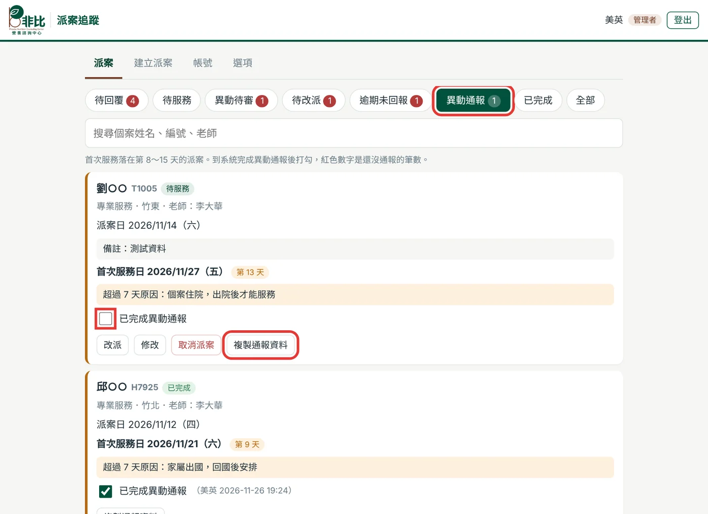
9. 搜尋派案
在任何分類的搜尋框輸入個案姓名、編號、老師姓名、服務項目或區域，清單會馬上篩選。要找舊的或已取消的派案，先點「全部」再搜尋。
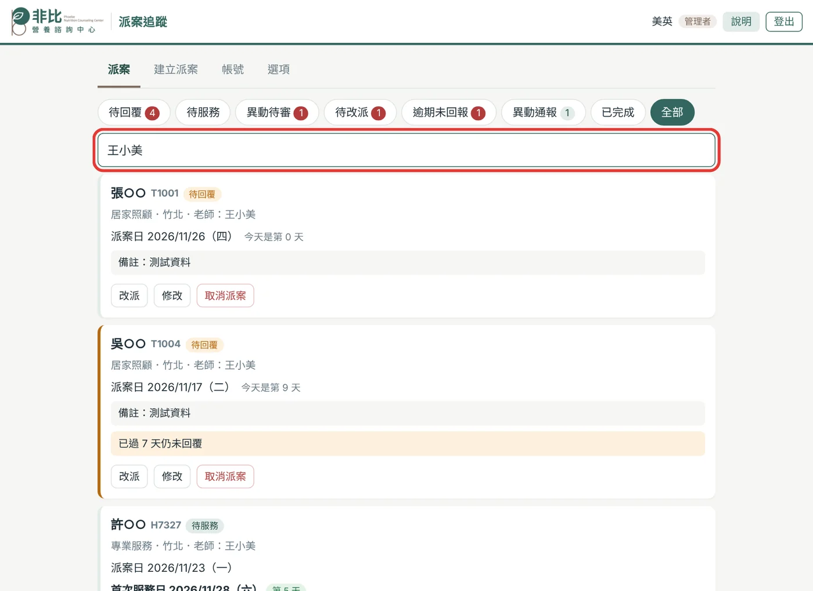
10. 帳號管理
新增帳號
- 點上方「帳號」。
- 填姓名、手機（09 開頭 10 碼），選角色（老師或管理者）。
- 按「新增並產生 PIN」。
- 畫面會跳出 4 碼 PIN，只會顯示這一次，請記下來私下告訴本人，再按「我記下了」。
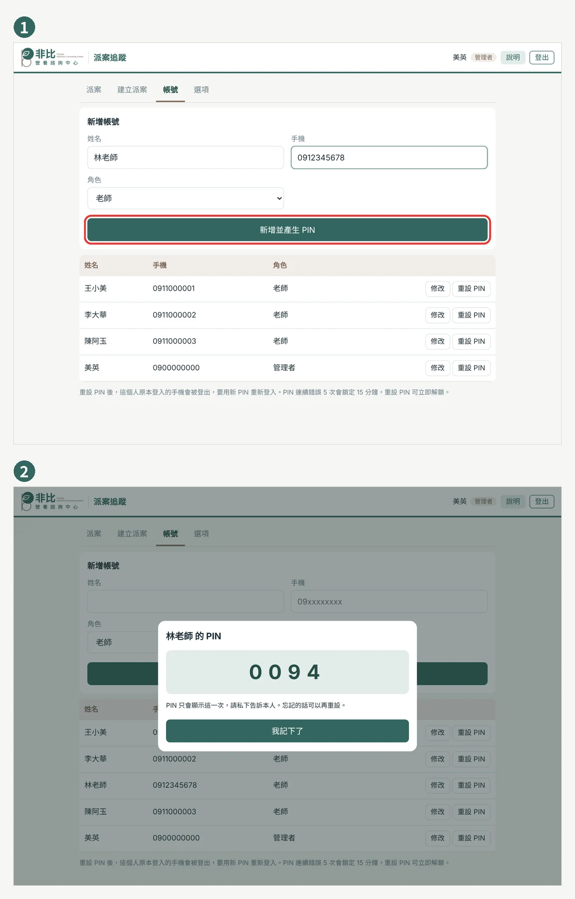
修改或停用：在帳號列表按「修改」，可以改姓名、手機、角色，或取消勾選「啟用」來停用。改手機、角色或停用後，這個人要重新登入。
- 老師還有進行中的派案時不能停用，請先改派。
- 不能停用自己，也不能取消自己的管理者身分。
- 停用的帳號不會刪除，舊派案的紀錄都還在，需要時可以再啟用。
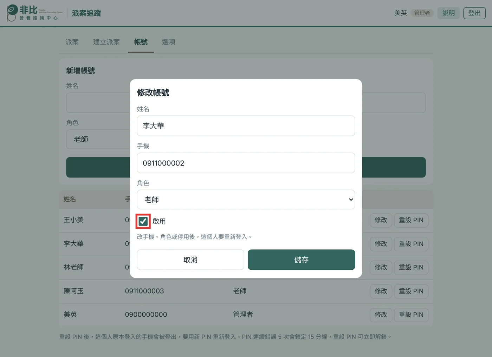
重設 PIN：老師忘記 PIN，或帳號標示「鎖定」（PIN 連續錯 5 次）時使用。按「重設 PIN」→「確定」，畫面會顯示新的 PIN。重設後，這個人原本登入的手機會被登出，要用新 PIN 重新登入。
11. 選項
「選項」管理三份清單：建立派案時的服務項目、區域，以及老師選到第 8 天以後時的常用原因。
- 點上方「選項」。
- 在框裡一行寫一個，順序就是下拉選單的順序。
- 按「儲存」。
刪掉某個選項不會影響已經建立的派案。「超過7天原因」不用寫「其他」，系統會自動加在最後；全部清空會恢復預設的三個原因。
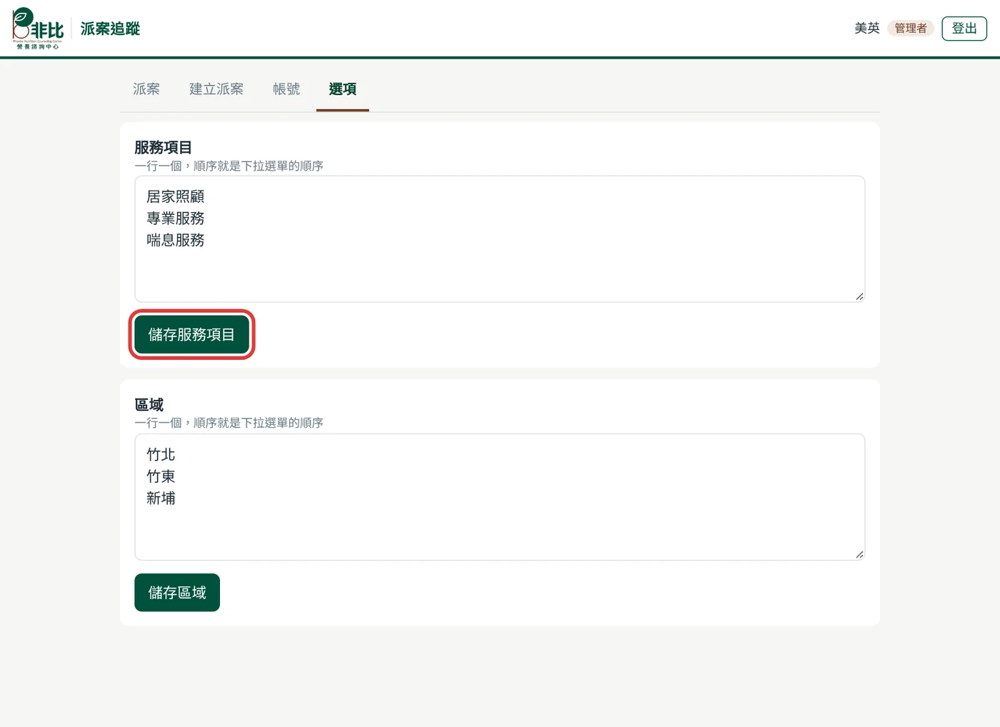
12. 用手機操作
手機版的功能和電腦版完全一樣。分類太多放不下時，用手指左右滑動分類列就能看到其他分類。
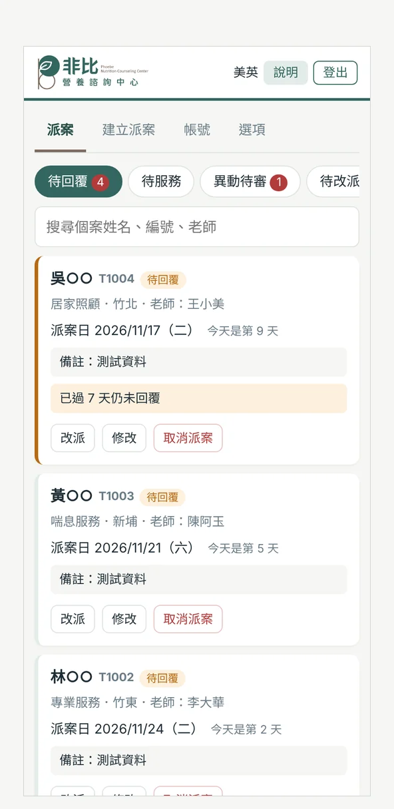
13. 常見問題
- 我忘記自己的 PIN：請另一位管理者幫你重設。只有一位管理者時，請系統維護人員在後台重設。
- 老師說登入不了：到「帳號」看有沒有「鎖定」或「停用」，再確認手機號碼對不對，必要時重設 PIN。
- 看不到老師剛剛的回覆：重新整理網頁。離開網頁再回來時，系統也會自動更新。
- 按了之後跳出紅色錯誤訊息：這次操作沒有存到，畫面已經還原。確認網路正常後再操作一次。
- 派錯老師：用「改派」，不要取消再重建，天數才不會重算。
- 派案日期填錯：老師還沒回覆前可以用「修改」更正；老師回覆後就不能改了，請聯絡系統維護人員。